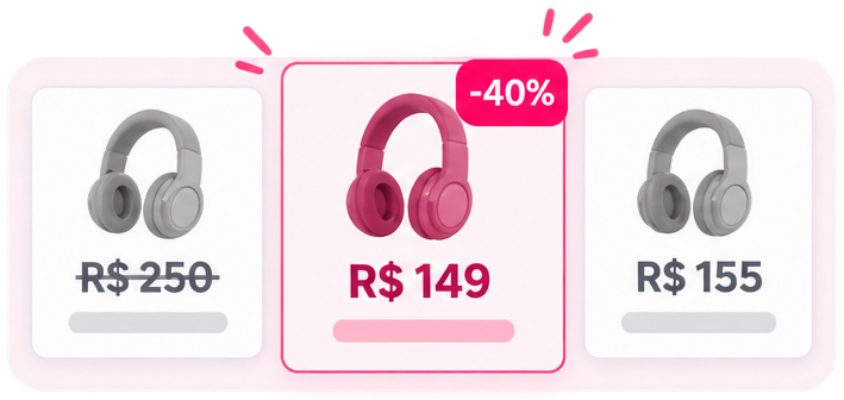
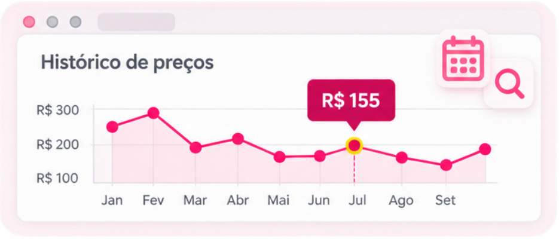

Como saber se uma promoção é realmente boa?
Você encontra um produto que queria comprar e vê aquele anúncio: “40% OFF”, “Oferta por tempo limitado” ou “De R$ 299 por R$ 179”.
A primeira reação pode ser pensar: “preciso aproveitar antes que acabe”.
Mas calma.
Uma promoção só é realmente boa quando o preço final está bom para aquele produto. O tamanho do desconto anunciado, sozinho, não diz isso.
1. Não olhe apenas para o “de R$... por R$...”
Este talvez seja um dos cuidados mais importantes.
Imagine um produto anunciado assim:
De R$ 250 por R$ 149 — 40% de desconto.
Parece excelente.

Mas e se esse mesmo produto custava normalmente R$ 155 algumas semanas antes?
Nesse caso, apesar do enorme “40% OFF”, a economia real seria muito pequena.
Por isso, quando possível, procure saber quanto aquele produto vinha custando antes da promoção.
2. Consulte o histórico de preços
Existem comparadores que registram a variação do preço de produtos ao longo do tempo.

Isso ajuda a responder uma pergunta muito melhor do que simplesmente “qual é o desconto?”:
O preço de hoje está realmente baixo em comparação com o preço praticado anteriormente?
Quando disponível, consultar o histórico de preços pode ajudar a descobrir se você encontrou uma oportunidade de verdade ou apenas um desconto que parece maior do que realmente é.
3. Compare o mesmo produto em mais de um lugar
Encontrou por R$ 199?
Antes de comprar, faça uma busca rápida pelo modelo exato.
Não compare apenas produtos parecidos. Observe marca, modelo, quantidade, tamanho, voltagem e demais características.
Às vezes uma oferta aparentemente mais barata corresponde a uma versão diferente do produto.
E compare também o valor total da compra, não apenas o preço estampado no anúncio.
4. Coloque o frete na conta
Produto A:
R$ 89 + R$ 30 de frete = R$ 119
Produto B:
R$ 99 + frete grátis = R$ 99
O segundo anúncio parece mais caro, mas nesse exemplo é a compra mais barata.
A pergunta correta, portanto, é:
Quanto vou pagar para receber esse produto em casa?
5. Não compre apenas porque está barato
Essa é uma das regras preferidas aqui do Mundo LuFiNas:
Economizar R$ 50 comprando algo de que você não precisa continua sendo gastar dinheiro.
Antes de aproveitar uma promoção, pense:
“Eu já queria esse produto ou passei a querer porque vi o desconto?”
É uma pergunta simples — e pode evitar muita compra por impulso.
6. Cuidado com a urgência
“Últimas unidades.”
“Só hoje.”
“Oferta termina em alguns minutos.”
Algumas ofertas realmente são temporárias. O problema é transformar a sensação de urgência em motivo suficiente para comprar.
Se você nunca pesquisou o produto, não conhece seu preço normal e nem sabe se ele atende à sua necessidade, o cronômetro não deveria decidir por você.
7. Avaliação também faz parte do preço
O produto mais barato não é necessariamente o de melhor custo-benefício.
Leia avaliações de compradores e procure especialmente comentários que expliquem por que gostaram ou não gostaram.
Durabilidade, tamanho real, acabamento, facilidade de uso e qualidade podem fazer uma diferença que alguns reais no preço não compensam.
Então, como saber se a promoção vale a pena?
Antes de comprar, faça este teste rápido:
Passou por esses pontos? A chance de você estar tomando uma decisão mais consciente é muito maior.
💕 Dica da Lu
Aqui no Mundo LuFiNas, a ideia não é escolher um produto simplesmente porque aparece escrito “promoção”.
A gente prefere pesquisar, comparar e tentar entender se aquilo realmente faz sentido.
Porque economizar não é comprar tudo mais barato. É gastar melhor.
Mundo LuFiNas — a gente pesquisa, você economiza!
Fontes e ferramentas úteis
Procon-SP — pesquisa e orientações ao consumidor sobre preços, descontos e comportamento de compra em períodos promocionais.
Buscapé — ferramenta de histórico de preços.
Zoom — ferramenta de comparação e histórico de preços.
As condições e preços encontrados em lojas podem mudar a qualquer momento. Sempre confira as informações na página oficial antes de finalizar uma compra.